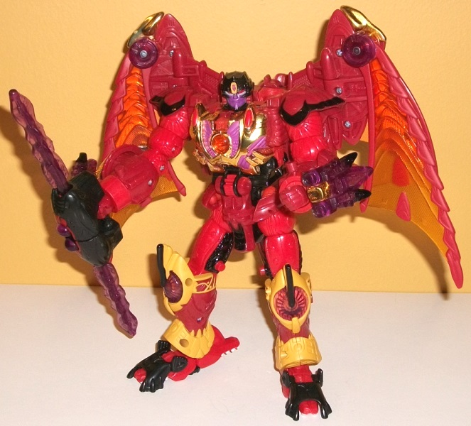
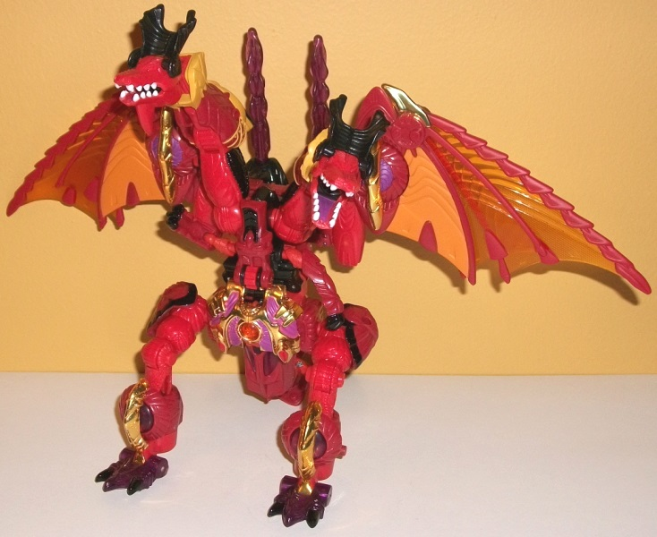
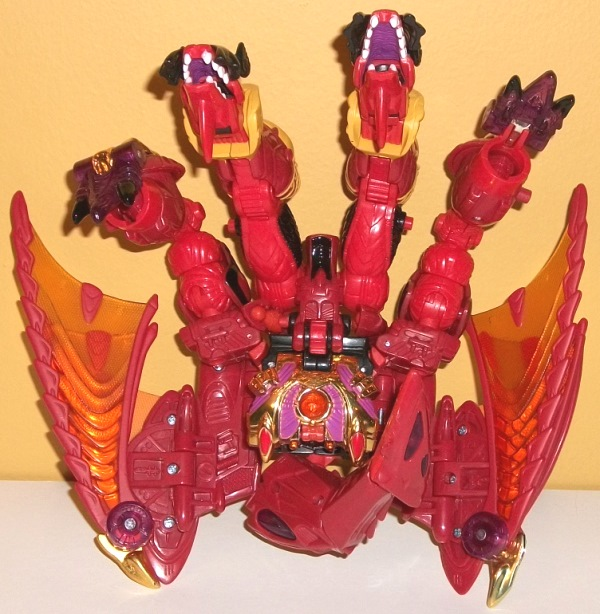
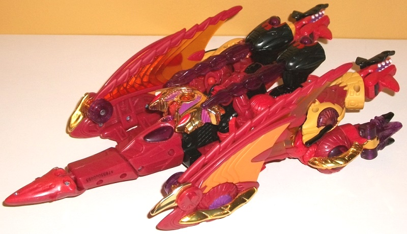
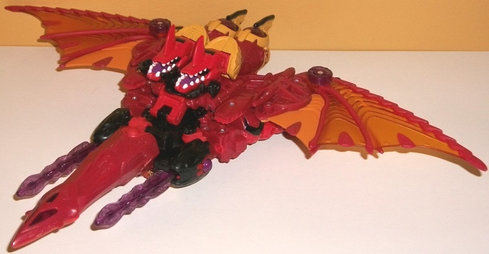

Allegiance
: Predacon
Size
: (RiD) Ultra
Difficulty of Transformation
: Medium
Color Scheme
: Fiery red, moderately
dark red, transparent orangish yellow, and some black, white, dull mustard
tellow, transparent purple, chrome gold, purple, and orange
Rating
: 7.9
(NOTE: Because this is a repaint, this is not a full-blown review. This mainly covers any changes made to the mold and the color scheme, and merely compares it to RiD (2001) Megatron. For a review on the mold itself, read the review of RiD Megatron here .)



They finally did it!
"Transmetal 3" Megatron here was a proposed exclusive back during the days
of 2003-2004 when BotCon was called the Official Transformers Collectors'
Convention (OTFCC), but was cancelled when 3H went under. Now, more than
a decade later-- and just in time for BotCon itself to be eliminated by
Hasbro-- the idea finally sees fruition! It's rather impressive that they
were still able to get the RiD Megatron mold 15 years after it was released
in the U.S. Since the idea for this was a further evolution on the
Transmetal
2 Megatron toy
(even though they give him another explanation in the
BotCon 2016 comic), Megatron's color scheme and general look hearken back
to that TM2 version. He's mostly red, with a "fiery" shade of the color
mostly used for his appendages and small connecting appendages, while his
lower appendages, wings, and cockpit/nosecone piece are a duller shade
of red. I really love the fiery red, and the dull red is a decent color
by itself, but although they of course both complement each other nicely,
I wish there just a BIT more contrast in between them for a bit more visual
interest in the modes where the chrome and/or legs aren't as visible. Speaking
of the legs, there is some nice mustard yellow paint detailing on the lower
legs, which provides such a nice contrast I wish it was used a bit more
on him-- same with the nice orange shade on the innermost third of his
wings. (The transparent shade used for the outer two-thirds of each wing
is more of yellowish-orange color, which looks nice, but not AS nice as
a solid orange would have, in my opinion.) Since this mold has chrome parts,
all of the chrome has been made a nice gold color-- though fair warning,
there's been reports just days after people received theirs of the gold
on the chest cracking (though thankfully mine hasn't really done that yet).
Megatron isn't all fiery colors-- hearkening back to his earlier BW forms,
he's got some transparent purple on his weapon, dragon feet, kneecaps,
and the cockpit windows. There's also a more "normal" shade of purple on
Megatron's face, dragon mouths, wheels, and chest. The rest of the purple
paint apps look great, but the paint isn't quite thick enough over the
gold chrome on his chest, so a bit of the latter can "peak through", unfortunately.
The last secondary color on Megs is black, which serves as a nice neutral
dark color for the rest of his scheme to contrast against. It's primarily
used as "lining" for the shoulders, waist, upper legs, and knees, as well
as used on his feet, head, bits of his core body, and weapon. As a minor
accent color, Megatron's dragon heads have their teeth painted white, though
in an apparent factory error the dragon eyes aren't painted-- which honestly
doesn't bother me much, they'd have been red anyways. (A sticker sheet
was available at the convention to remedy this, among other things, but
they're tiny little stickers, so I didn't bother with them.)


Megatron has a new headsculpt,
and BOY is it good. It really replicates the details of Megatron's TM/TM2
show model head pretty much flawlessly, with nice light red eyes, a purple
face, red along the sides of the face, and a yellow bit on his forehead
with a painted little Predacon symbol in it. It's one of the best headsculpts
FunPub has ever done. That said, because of the head change, making the
original RID Megatron's bat mode is impossible (the mouth part has been
taken out anyways). Additionally, in a factory error, the spark crystal
in the chest is not a Predacon symbol, but a Beast Machines Dinobot symbol,
which is unfortunate but ultimately ignorable.
BotCon 2016 Megatron
is certainly a triumph of planning, and it's impressive they finally got
this idea done after so long. The new headsculpt is spot-on, and most of
the colors are good, though I wish his reds contrasted a bit more. The
chrome already chipping on many copies and the Dinobot spark crystal are
also unfortunate, but it hasn't stopped the want for this guy-- he goes
for the most out of the BotCon 2016 attendee exclusives, by far. Most of
my major complaints have to do with this mold's mostly weak alt modes.
Keep that in mind if you want to pick him up.
Review by Beastbot